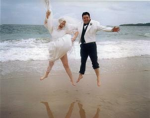
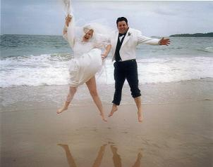

Laurel-Anne Kenny-Levick JP
Civil Marriage Celebrant, NSW
Precious memories are what make things beautiful.
Those of you who have met me at the "For Eternity" Bridal Expo at Panthers, may recall the vintage dress displayed on my stand.

Many people ask me about this dress...and so I thought I'd put it's story on my website for those who are interested.
For anyone who loves and appreciates vintage clothing, this wedding dress probably already touches their sentimental mind as they wonder about its story. For me, it is a sentimental journey indeed, for I know its story, and have even been a part of it.
To truly understand this dress, we must go back to a time long before it was even dreamed of...
It is during the depression when many Australian families were poor and finding it hard to make ends meet. A family much like many others was camping near the coast, picking blackberries to help feed the hungry mouths of its children and perhaps also to make jams and condiments to sell for money.
Tragedy struck when one night when after much rain, a dam on the hillside burst. As the torent of water crashed down the hillside, it took with it everything in its path, including the little campsite where families were trying to make ends meet. The only survivor was a young girl of 15. She lost her whole family that night, and in a time when no one could afford to take her in, she was alone in the world.
The Sun Newspaper took pity on this raven haired young woman, and raised money to buy her a sewing machine. It was a Singer sewing machine, not electric, but with a pedal that you pushed up and down to make it sew.
She learnt how to use it and became quite good at sewing. After much hardship and many moves as she tried to find family who could look after her, she got a job sewing evening gowns for the wealthier families. She worked in the Queens Arcade in the city of Sydney.
Many years later, after she married and had two daughters of her own, the youngest of her children told her she was getting married. With excitement they bought fabric and patterns with the money they had saved, and created a lovely, simple wedding dress for the special occassion.

That occassion was the wedding of my mother and father. Here is my beautiful Mum on her wedding day, wearing that gorgeous dress. The year was 1968.
The dress was simple but made with love. Each little pearl and daisy stitched onto its skirt and train by hand. The dress was made on the old Singer sewing machine that had been bought all those years ago, for the raven-haired girl who lost her family, my Grandmother Laurel.
Nearly two and a half decades later I excitedly announced that I was getting married, and so with the same amount of love and care, that dress was taken out of storage (by the way it was nearly thrown out at one stage, when my father thought it was old curtains!!) and made ready for my own special day.
I proudly wore the dress on my wedding day, feeling all the effort and love and memories that had gone into it. The fabric was old and it was not an eleborate dress like many girls my age were wearing, but to me it was worth so much more.
You can see we were very excited about the day! The year was 1995.
 

The day after our wedding my husband and I again put on our wedding clothes and drove to the Central Coast where my Grandmother, the original creater of the dress, was living. She had been too ill to travel to our wedding and so we went to her, so she could see me in this amazing dress that she had sewn so many years ago for my mother, on the machine that she had been given at a time when her life was so full of greif.
Tears of joy flowed aplenty as we hugged - a circle of women who share the understanding of love, pain, romance, joy and memories. This picture is of me in the dress, standing beside my Grandmother Laurel, who made the dress in 1968. It's not the best photo of us, but we had all been crying so much, most photos showed us with red eyes!

My Grandmother has passed away now, but I am so glad that I was able to wear that dress and that she saw me in it. I'm glad for my Mum too, that her special dress was again featured on such a happy day. The dress now travels with me, and is a feature in my stand at the bridal expo. It has no monitory value really, but to me it is priceless.
So, for those of you who have asked and for those who just love vintage because each piece has a hidden story...this was mine and this is the story of a very special dress...so far.